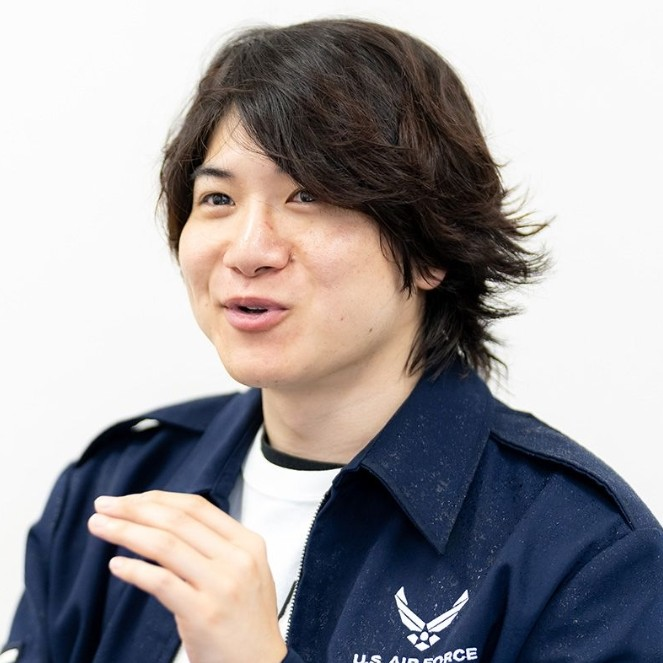

【ご注意】 当サイトは個人のファンが運営する非公式ファンサイトです。本人様・所属事務所・関係者各位とは一切関係ありません。
NEWS
- 2026.10.01 サイトをリニューアル開設しました！
PROFILE

シドニー石井 (Sydney Ishii)
生年月日：1994年7月1日
血液型：B型
身長 / 体重：167 cm /70 kg
出身地：神奈川県
特技・趣味：野球、麻雀、犬を見る
公式X（Twitter）を見るCAREER
相方の吉野 崇（よしの たかし）さんとコンビ「シドニー」を結成。
吉本興業の劇場（神保町よしもと漫才劇場など）を中心にライブ出演を重ねている。
WORK
-
ラジオ
シドニー石井と一軒目
Apple Podcastで聴く ➔ -
YouTube
僕らの別荘
YouTubeチャンネルを見る ➔